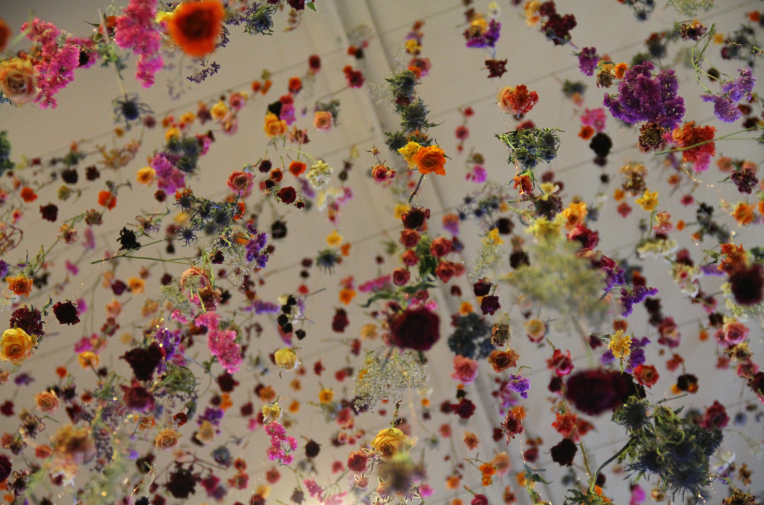
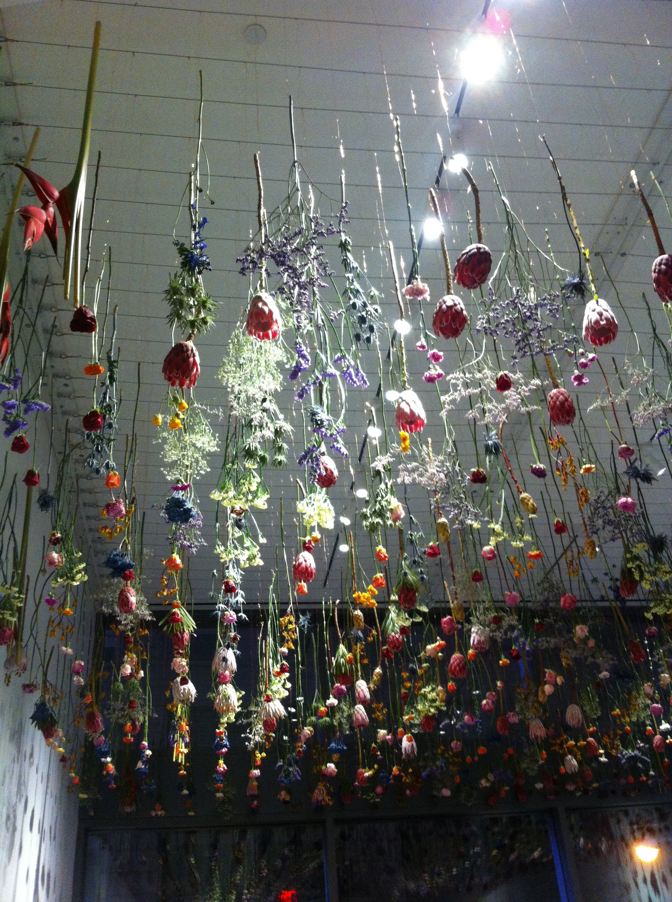
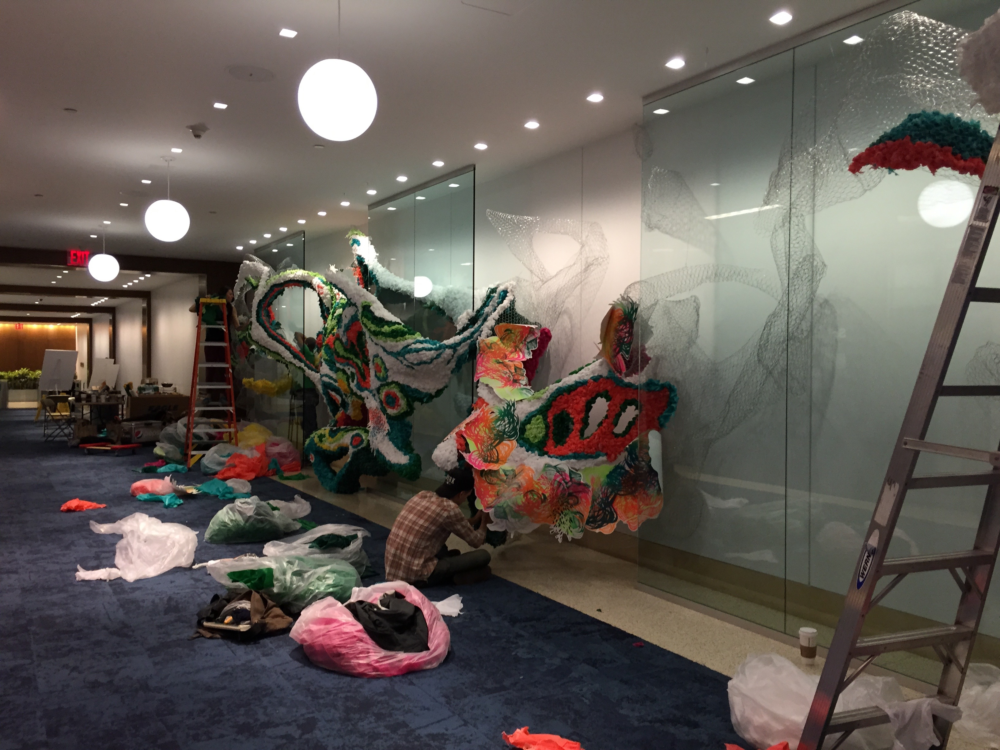
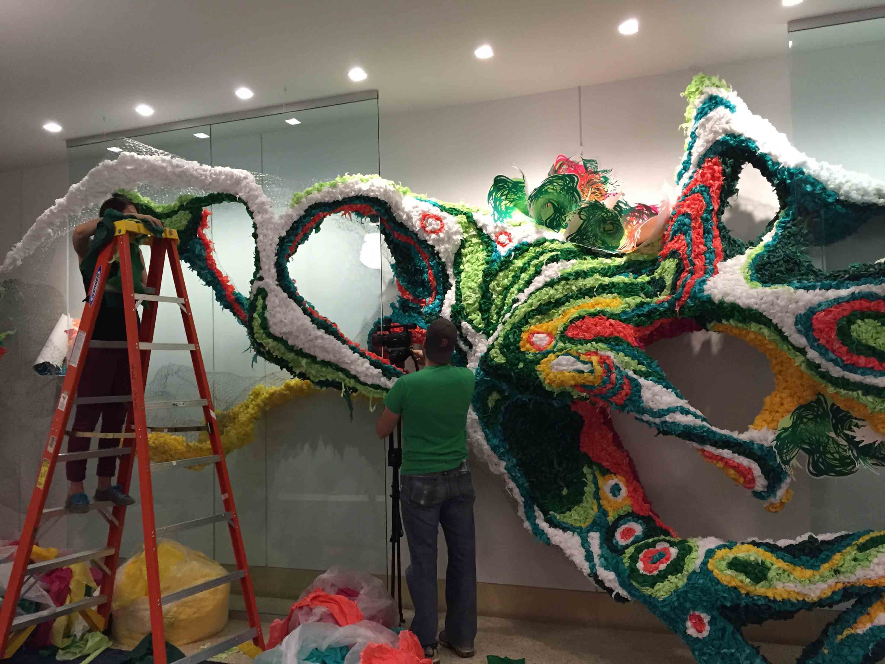

Art At Viacom
Scroll down for project info.
The Art At Viacom project was a new way to support Viacom’s relentless focus on innovation. Through a series of installations, the team sought to bring delight and inspiration to the media company's headquarters. I was a part of a project leadership team that handled production and execution for these installations.We partnered with emerging artists to create a series of installations that would live at Viacom's corporate headquarters in New York City.

Rebecca is a UK based artist known for her beautiful flower installations. All the flowers were flown in from the Netherlands and installed over the course of 3 days.


Crystal Wagner’s installations combine 2-dimensional and 3-dimensional forms. Her alternative use of materials, hybrid approaches to printmaking, and massive site-specific installations, have led to her artwork being exhibited around the world. This installation was on display in the lobby of the Viacom office's at 345 Broadway in NYC.
